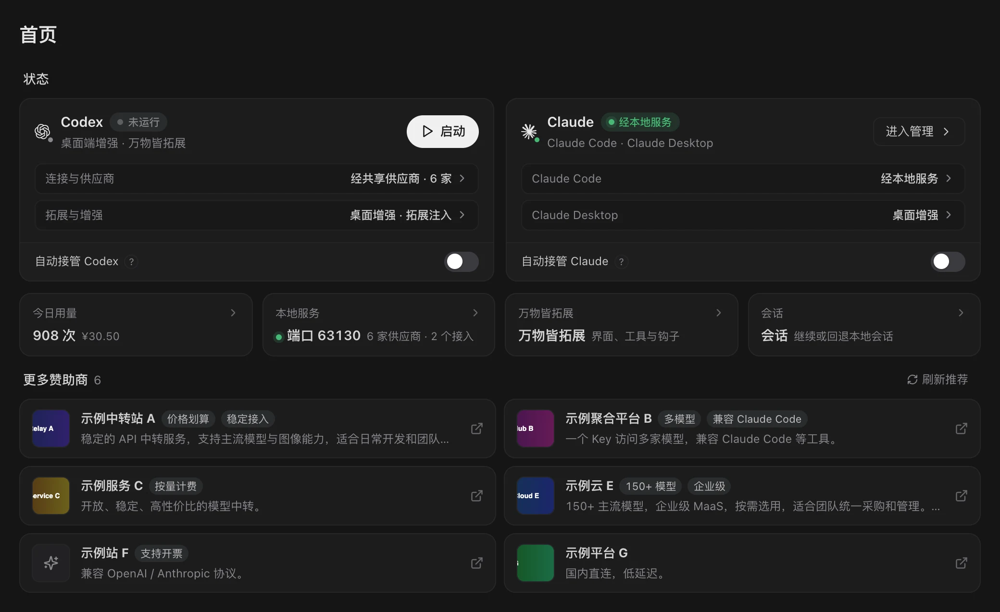
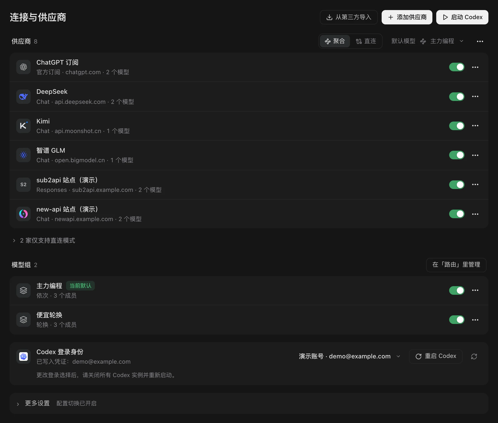
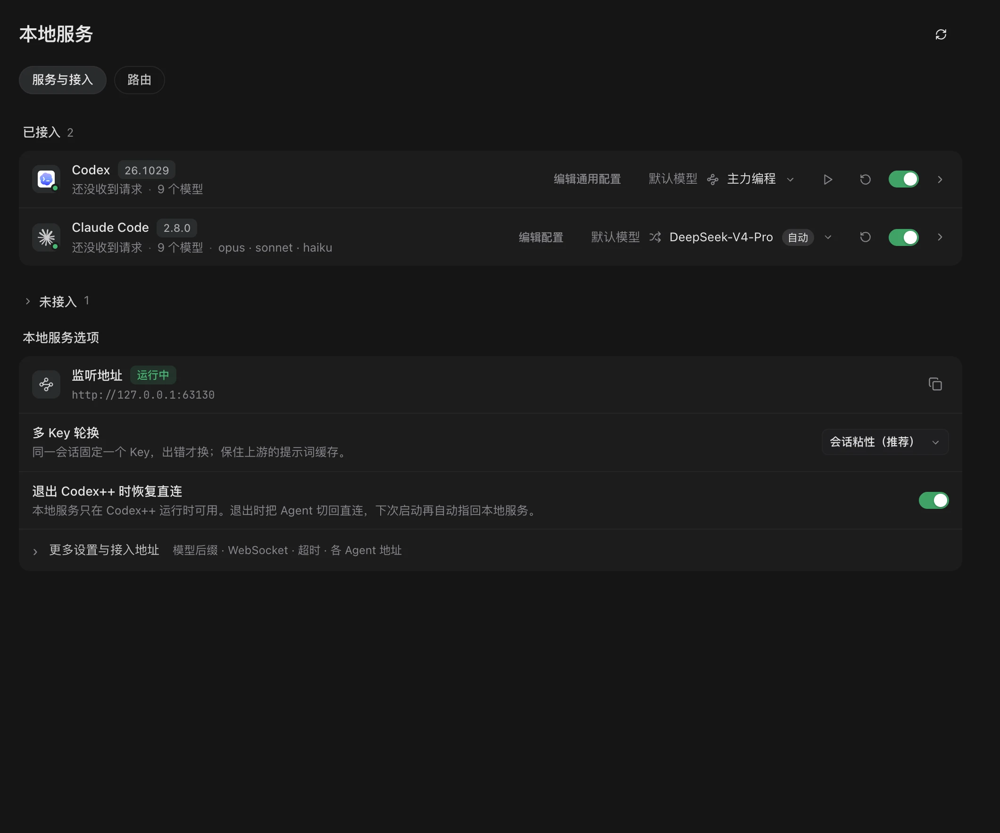
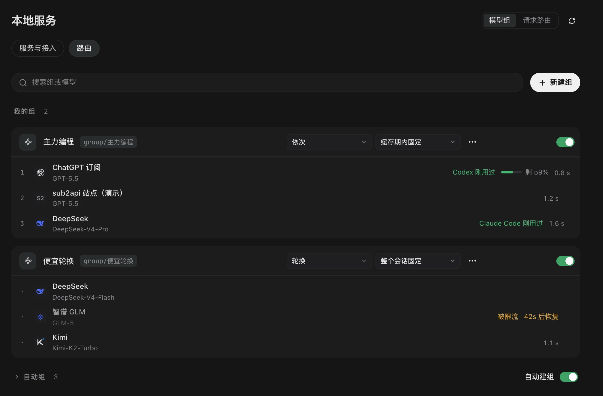
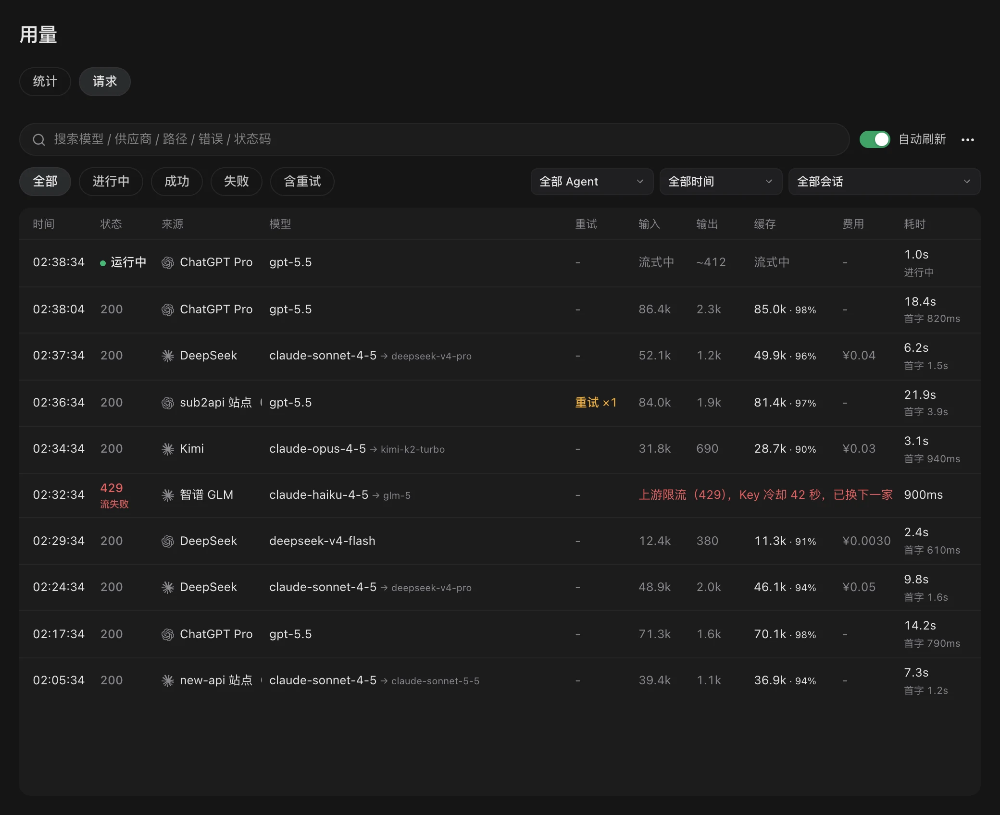
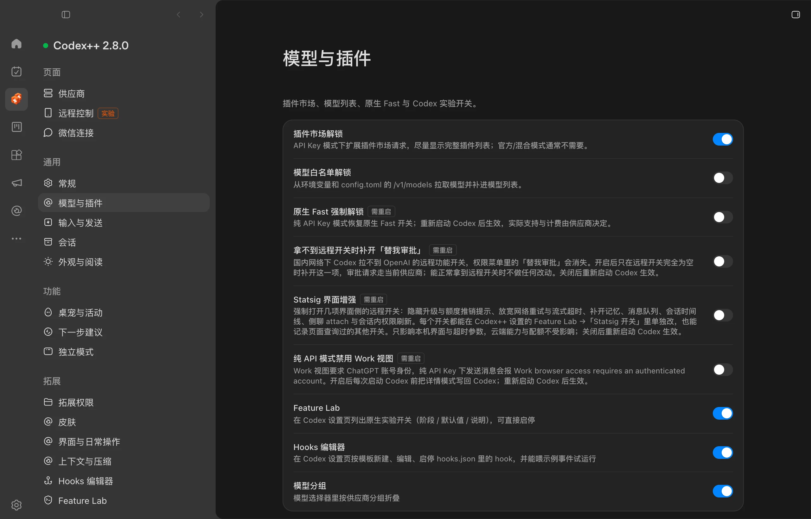
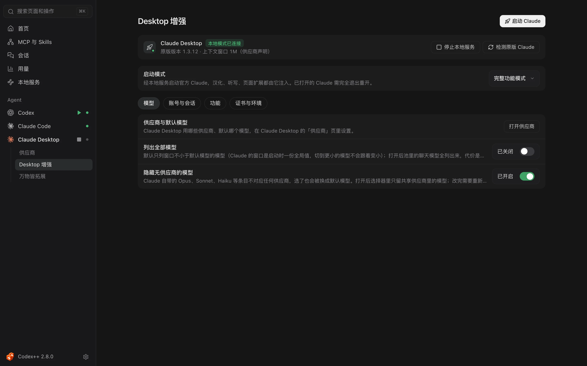
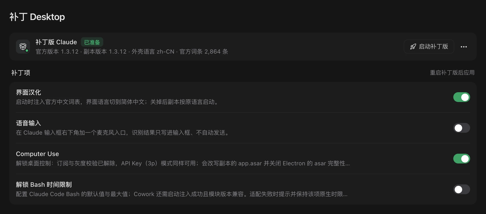
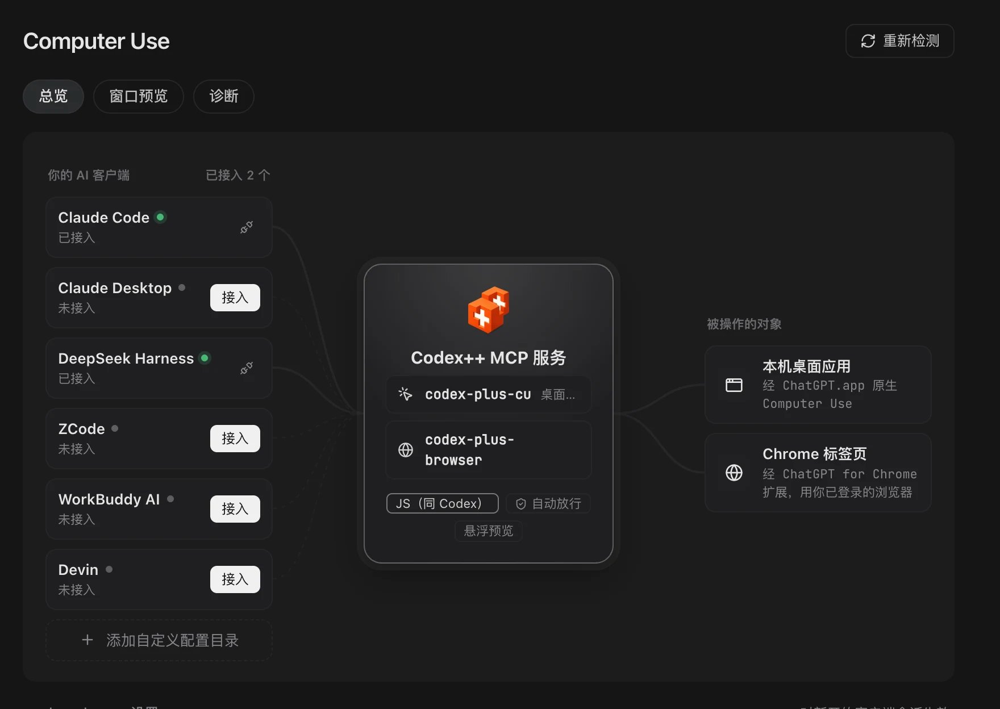
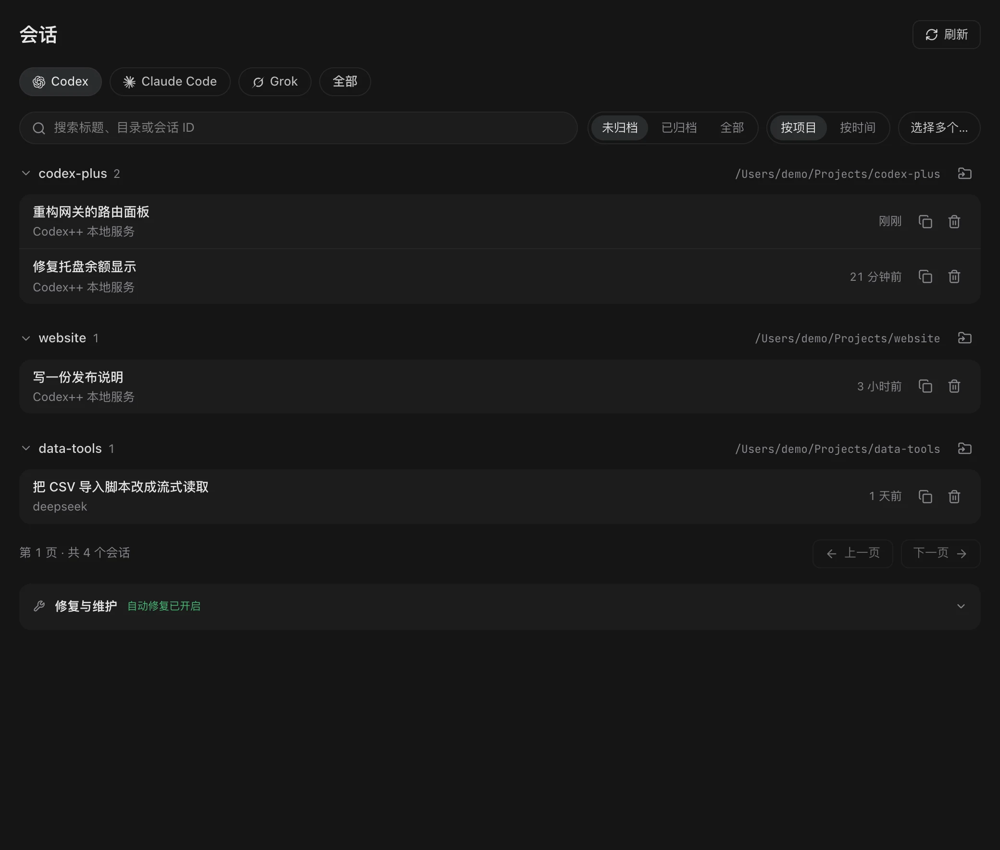

00 · BEFORE YOU START
开始之前
Codex++ 是一个本地运行的管理器，它本身不提供模型，而是帮你把已经装好的 Agent 客户端和你自己的供应商连起来，再给它们加上官方没有的功能。它不会修改任何官方应用的安装文件。
你需要准备
- 一台 Windows（x64）或 macOS（Apple Silicon / Intel）电脑。Computer Use 等少数功能目前只支持 macOS，文中会单独标出。
- 至少一个 Agent 客户端：Codex 桌面版（ChatGPT 桌面应用）、Claude Code、Claude Desktop 或 Grok CLI，用哪个装哪个。
- 一个模型来源：任意兼容的 API Key（模型厂商或中转服务商），或者 ChatGPT、GitHub Copilot、SuperGrok 等订阅账号。
两种连接方式，先选一种
聚合
Codex++ 在本机跑一个本地服务（本地网关），Codex、Claude Code、Grok 都指向它，共用同一份供应商。每家供应商一个开关，开着的合在一起用；按模型名自动选供应商，出错自动换下一家，多 Key 自动轮换。
直连
在供应商列表里点一家的「使用」，Codex 直接连上游；官方登录、官方登录 + API、纯 API、故障转移 / 模型聚合都还在。1.x 的老用户升级后什么都不用改。
两种方式用的是同一份供应商列表，在「Codex → 连接与供应商」顶部的「聚合 / 直连」一键切换。本教程以聚合为主线，直连放在 后面单独介绍。
01 · INSTALL
安装与首次打开
- 下载安装包前往 GitHub Releases，按你的设备选择：
设备 安装包 Windows · x64 CodexPlusPlus-*-windows-x64-setup.exemacOS · Apple Silicon / Intel CodexPlusPlus-*-macos-universal.dmg - 安装Windows 双击
setup.exe按提示安装；macOS 打开 DMG，把 Codex++.app 拖进「应用程序」。 - 打开 Codex++首次打开会出现两步引导：连接模型、启动 Codex，跟着它添加供应商并把 Codex 启动起来。关掉了也没关系，之后可以在「设置 → 通用」的「入门」里点「重新打开引导」。
双击 Codex++ 永远打开的是管理界面，不会直接拉起 Codex。官方应用要从管理界面里启动，内置拓展才会注入，见 第三步。
从 v1.5 / v1.6 的 macOS 旧版升级：旧版本只会打开 DMG，请把其中可见的 Codex++.app 手动拖入「应用程序」替换一次。v1.7 及以后的版本可以在应用内自动更新。原有配置和会话数据都会沿用。
02 · TOUR
认识界面
左侧栏从上到下分成几块，最上面的搜索框（⌘ K / Ctrl K）随时能跳到任意页面：
| 位置 | 里面有什么 |
|---|---|
| 上方 | 首页（状态、常用入口与赞助商推荐）MCP 与 Skills 会话 用量（统计 + 请求）本地服务（服务与接入 + 路由），一次覆盖所有 Agent。 |
| Agent | Codex、Claude Code、Claude Desktop 各占一行，点开后它的页面缩进列在下面：
|
| 底部 | 新版本的下载进度；版本号旁的齿轮进入设置目录：通用、配置文件、配置体检、版本与更新、日志与诊断、关于、Codex、缓存清理，以及 Beta 里的 Computer Use 与 Agent 协作。 |

两个省事的入口
- 快速跳转：随时按 ⌘ K（Windows 为 Ctrl K）搜索页面和常用操作；设置目录顶部也有自己的搜索框。
- 托盘快捷面板：左键点系统托盘 / 菜单栏里的 Codex++ 图标，不打开主窗口也能给各 Agent 换模型、看最近请求。
03 · PROVIDERS
第一步：添加供应商
供应商列表是所有 Agent 共用的模型来源。添加一次，Codex、Claude Code、Claude Desktop、Grok 都能用。
- 打开「Codex → 连接与供应商」，点右上角「添加供应商」可以选这几类来源：
- API Key：模型厂商的 API，或支持 Codex++ 的服务商，填 Key 即可；上游协议可以是 Chat、Responses、Anthropic 或 Gemini；
- 登录订阅：ChatGPT 订阅、GitHub Copilot、SuperGrok 等，在浏览器里登录，无需密钥，和 Codex 自己的登录互不影响；
- 导入：点「从第三方导入」，把别的工具里已经配好的供应商一次导入多家。
- 确认模型添加时会自动拉取上游模型列表，并按公开价格表填好价格。
- 按需细调点开一家供应商进入详情，可以：
- 放多个账号或 Key：登录型账号在详情里「添加账号」，Key 直接加；分配方式按供应商设（依次、轮换、按权重、额度优先、用完再换），同一个对话固定在一个账号 / Key 上，答不了才换；
- 按模型设置上下文窗口、思考等级和价格（窗口可按公开资料一键填）；
- 设置代理：沿用系统代理 / 单独代理 / 不使用代理（直连）；
- 设置限速：每个 Key 每分钟最多请求数、同时进行的最多请求数（默认不限）；
- 点「从上游获取」补上新模型——后台每天也会检查一次，有新模型时会提示。
- 测一下在供应商那一行的「⋯」菜单里点「测试」，看状态码、首字耗时和上游错误原文。

ChatGPT 订阅作为供应商时要单独登录一次，不能复制 Codex 自己的登录：两边共用一个登录会互相把对方刷失效。
04 · CONNECT
第二步：选聚合或直连
「连接与供应商」顶部有「聚合」「直连」两个选项，两边是同一份供应商列表：
- 聚合：经本地服务。每家供应商一个开关，开着的合在一起用；在顶部「默认模型」选一个模型或模型组。只能直连的供应商收在列表下方。
- 直连：点一家供应商的「使用」，Codex 直接连它。离不开本地服务的供应商收在列表下方；在聚合时点「使用」，会先断开本地服务再切过去。详见 Codex 直连与多开。
Codex 登录身份
同一页下面的「Codex 登录身份」决定 Codex 自己用哪个身份登录：ChatGPT 账号 虚拟账号 不登录。选虚拟账号时，用 API Key 也能打开代码审查、图像、插件等 ChatGPT 专属入口，模型仍走你选的供应商；官方登录的供应商下虚拟账号不可选。改完关掉所有 Codex 实例，从 Codex++ 重新启动。
其他 Agent
| Agent | 在哪里设、怎么用 |
|---|---|
| Codex | 聚合时模型选择器按供应商分组显示开着的供应商的模型，带思考档位和 Fast；收藏的模型显示星标。在「本地服务 → 服务与接入」点开 Codex 一行，还可以单独指定「会话起名」用的模型、生图模型和「替我审批」的去向，避免消耗官方额度。 |
| Claude Code | 侧栏「Claude Code → 供应商」，同样分聚合 / 直连：聚合时打开供应商、选默认模型；直连时点「使用」，Key 直接写进 Claude Code 自己的 settings.json，不经 Codex++。在 Claude Code 里用 /model 切换 opus · sonnet · haiku 档，每档实际用哪个模型在「本地服务 → 服务与接入」的 Claude Code 行设置。上游是 Chat / Responses 协议也能用，会自动转换。 |
| Claude Desktop | 「Claude Desktop → 供应商」打开要用的供应商、选默认模型，始终经本地服务。见 Claude Desktop。 |
| Grok 等 | 在「本地服务 → 服务与接入」展开「未接入」，打开开关、选默认模型。开着的供应商的模型出现在 Grok CLI 的模型列表里，每个模型带自己的上下文窗口。 |

接入是可逆的。接入前 Codex++ 会把 Agent 的配置文件存档；断开时只还原本地服务改过的那几项，其他工具在此期间改过的内容不受影响。如果某个 Agent 的配置被别的工具接管，Codex++ 会提示并提供一键重新接入。
05 · LAUNCH
第三步：启动 Codex
Claude Code、Grok 是命令行工具，设好后照常在终端里用即可。Codex 桌面版需要从 Codex++ 启动，内置拓展才会注入：
- 点「连接与供应商」右上角的 启动 Codex（已在运行时显示为「重启 Codex」）；
- 或者点侧栏 Codex 行右侧的启动按钮。Codex 若是你自己打开的、还没挂载，这个按钮会变成「重启并挂载」，点一下即可。
依赖注入的设置（大部分内置拓展、Fast 解锁、Codex 登录身份等）改完后需要通过 Codex++ 重启 Codex 才生效。
习惯从程序坞 / 开始菜单打开 Codex？可以在首页打开「自动接管 Codex」：你自己双击启动官方 App 时，Codex++ 会自动接管并注入内置拓展。
到这里就完成了最基础的配置。下面的章节都是进阶用法，按需阅读。
06 · ROUTING
路由与模型组
本地服务按模型名决定把请求发给谁：
| Agent 里选的模型 | 本地服务怎么发 |
|---|---|
deepseek-v4-pro | 不带供应商的模型名：发给开着的供应商里提供它的那家；多家都有时自动成组，按顺序尝试，出错换下一家。 |
kimi/kimi-k2-turbo | <供应商>/<模型>：只发给指定的那一家。 |
group/<id> | 你自己建的模型组：按组的策略在成员之间分配。 |

新建模型组
在「本地服务 → 路由」点「新建组」，把几个模型编成一组，Agent 就能把它当作一个模型来选，也可以直接设成 Codex、Claude Code、Claude Desktop 的默认模型。编辑组时可以先选模型，再勾选提供它的供应商，一次加成组成员。每个组可以选择分配策略：
- 依次：答不了时按列表顺序换下一个；
- 轮换 / 按权重：把请求分摊到多家；
- 额度优先：优先用剩余额度最多的订阅账号；
- 速度优先：按最近的平均首包耗时选最快的；
- 手动：只用选中的那个成员。
旁边再选固定方式：缓存期内固定或整个会话固定。成员支持通配符（例如 openrouter/*:free），上游新增的模型会自动算进来。打开「隐藏成员」后，组里的模型不再单独出现在 Agent 的模型列表里，只能通过这个组来选。
页面右上角切到「请求路由」，能看到每个请求是怎么路由的，以及对应会话的上下文。
07 · USAGE
用量与请求日志
侧栏的「用量」有两个页签：
- 统计：费用、token、缓存命中、调用次数，按天的柱状图和各 Agent 占比，按供应商、模型、Agent 的明细；还有按小时的用量、热力图，以及订阅账号的额度趋势。点明细里的一行，会跳到请求页签并自动筛好。
- 请求：每条请求的状态、实际走的供应商和模型、重试、token、缓存、估算费用与耗时。失败的请求直接显示错误原因，可以按 Agent、状态、会话和时间段筛选。

claude-sonnet-4-5 → deepseek-v4-pro 这样的映射、重试和首字耗时都看得见。08 · LOCAL SERVICE
本地服务选项
在「本地服务 → 服务与接入」下方的「本地服务选项」里：
- 监听地址：只监听本机，形如
127.0.0.1:<端口>。各 Agent 用自己的地址和本地 token 接入，展开「更多设置与接入地址」能看到；觉得 token 泄露了，在那里点「更换 token」，旧 token 立即失效。 - 多 Key 轮换：默认「会话粘性」，同一会话固定一个 Key，出错才换，能保住上游的提示词缓存；也可以改成每个请求换下一个 Key，用量更平均但缓存命中会变低。供应商自己设了分配方式时，以供应商的为准。
- 退出 Codex++ 时恢复直连（默认关闭）：本地服务只在 Codex++ 运行时可用。打开后，退出时把 Agent 切回直连，下次启动再自动指回本地服务。
退出 Codex++ 后，接在本地服务上的 Agent 会连不上，重新打开 Codex++ 即恢复。如果你经常关掉 Codex++ 单独用 Agent，请打开上面的「退出时恢复直连」。安装更新前 Codex++ 总会先切回直连。
09 · CODEX
Codex 内置拓展
Codex++ 自带的二十多项功能都是内置拓展，开关在 Codex 里：从 Codex++ 启动 Codex 后，在 Codex 侧栏点 Codex++ 打开它的设置页。设置按分组排列：「常规」里有「启用内置拓展」总开关，「模型与插件」里有原生 Fast 强制解锁等，另外还有「输入与发送」「会话」「外观与阅读」等分组。关掉总开关后，供应商与启动管理照常可用。

常用的几项
- 用量状态栏：输入框下方显示生成速度、缓存命中率与上下文占用。
- 会话删除、导出与轮次回退：在会话列表里直接删除（可撤销）、导出 Markdown、回退到某一轮。
- 语音输入、粘贴修复、下一步建议、打字特效：让输入和阅读更顺手。
- 插件市场解锁 / 模型白名单解锁：API Key 模式下也能看到完整插件列表和自定义模型。
纯 API Key 也想用原生 Fast
- 在 Codex 的「Codex++」设置页，确认「常规」里的「启用内置拓展」已打开，再到「模型与插件」打开「原生 Fast 强制解锁」（默认关闭）。
- 直连时，在「Codex → 连接与供应商」里为该模型设置「Fast（priority）支持」并保存。聚合时，Codex 的模型目录会带上 Fast 信息；模型组里每个成员都支持 Fast 时，选这个组也能开 Fast。
- 从 Codex++ 重启 Codex，在模型菜单里选择 ⚡ Fast。实际可用性与计费以供应商为准。
Codex 下面的其他页面
- 启动急救：Codex 打不开时用。可以关掉内置拓展总开关、切独立模式、逐个关本地拓展、恢复默认皮肤；
- Codex 插件：官方插件目录的快照，选了虚拟账号时不登录 ChatGPT 也能装；Codex++ 自己的拓展在「万物皆拓展」里；
- 万物皆拓展：精选、社区、本地、我发布的、导入 dsh 插件几个页签，右上方有「对话造拓展」和「热重载拓展」；
- 微信连接：扫码连接本机 Codex，出门也能派活；
- 远程控制：在浏览器或手机上操控 Codex 的会话；还能配置钉钉、飞书群机器人，任务完成、出错或等审批时推送到群里；
- 多开：见 直连与多开。
Codex 应用路径、启动参数与安装维护在「设置 → Codex」里。
10 · DIRECT
Codex 直连与多开
不想经本地服务、只给 Codex 换供应商时，打开「Codex → 连接与供应商」，在顶部选「直连」，点一家供应商的「使用」。供应商列表和聚合时是同一份；离不开本地服务的供应商收在列表下方。几种接法各自配置、一键切换：
| 接法 | 适用场景 |
|---|---|
| 官方登录 | 使用 ChatGPT / Codex 官方账号，官方额度与插件市场。 |
| 官方登录 + API | 保留官方登录与插件入口，模型请求走兼容 API，不消耗官方额度。 |
| 纯 API | 自定义 Base URL / Key，无需官方账号；想要插件等专属入口，「Codex 登录身份」选虚拟账号。 |
| 故障转移 / 模型聚合 | 故障转移：多家之间失败切换与轮转；模型聚合：带 cpx-供应商ID/模型名 前缀的模型固定发往对应成员。 |
按模型设置上下文窗口
在模型列表里给模型名加窗口后缀，Codex++ 会生成 model_catalog_json，让 Codex 按当前模型使用各自的窗口；没写后缀的模型沿用供应商级配置。
# 模型列表，一行一个
deepseek-v4-pro[1M]
your-model[200K]
another-model[128000]多开
「Codex → 多开」可以为每个供应商身份启动一个隔离的 Codex 实例，互不干扰。多开只使用「连接与供应商」里的直连供应商；实例已在运行时，改配置后需要重启该实例才生效。
纯 API 和官方登录 + API 使用不同的认证位置，不要手工在两种接法之间复制 auth.json。
11 · CLAUDE DESKTOP
Claude Desktop：完整功能模式、3p 模式与补丁版
Claude Desktop 有三种用法，在「Claude Desktop → Desktop 增强」的「启动模式」里选。前两种直接启动原版 Claude、模型走你在 Codex++ 里配的供应商，不需要登录 Claude 账号；补丁版则是在 Claude.app 的副本上加功能，继续用你自己的账号。
| 用法 | 做法 | 适合 |
|---|---|---|
| 完整功能模式（推荐） | 原版 Claude 经 Codex++ 本地服务启动，还原 claude.ai 完整界面（项目、Artifacts、定时任务、自定义），听写、Computer Use、后台模式可用；需要信任一枚本机证书。 | 想要 Claude Desktop 的全部功能，又不想登录账号 |
| 3p 模式 | 原版 Claude 用隔离的配置目录直接连 Codex++ 本地服务，不装证书。 | 只聊天、写代码 |
| 补丁版（补丁副本） | 在副本上加中文界面、听写、Computer Use，可解锁 Claude Code 的 Bash 时间限制；官方 Claude.app 不动。 | 继续用自己的 Claude 账号 |
用完整功能模式启动
- 选默认模型打开 Claude Desktop → 供应商，打开要用的供应商，选默认模型（模型组也可以）。Claude Desktop 始终经本地服务。
- 切到完整功能模式进入 Claude Desktop → Desktop 增强，「启动模式」选「完整功能模式」。
- 准备并信任证书在「证书与环境」页签，「本地证书」一行点「准备证书」，再点「信任证书」（会弹一次系统授权）。「语音识别」「运行环境」显示已就绪即可。
- 启动 Claude先完全退出 Claude，再点右上角「启动 Claude」或侧栏 Claude Desktop 行的启动键。状态变成「本地模式已连接」就好了。

- 列出全部模型（「模型」页签）：默认只列窗口不小于默认模型的模型；打开后供应商里的聊天模型全列出来。
- 用户名与套餐（「账号与会话」页签）：只改 Claude 里显示的账号信息，从 Codex++ 启动后生效。
- 会话同步：启动前在 3p 模式与完整功能模式之间同步 Code 会话，也可以点「立即同步」。
- 能力开关（「功能」页签）：界面汉化、听写、电脑控制、后台模式、Cowork 等各自开关。
- 停止：点「停止本地服务」或侧栏 Claude Desktop 行的停止键，会一并退出挂在本地服务上的 Claude。
不用时可在「证书与环境」里「取消信任证书」，从系统信任里移除；切回 3p 模式时，Codex++ 会还原它改过的 Claude 部署配置。Claude.app 的安装包始终不改。
补丁版
在「Desktop 增强」的「启动模式」选「补丁副本」，补丁版的设置就出现在这一页：点「制作补丁版」创建副本，按需打开界面汉化、语音输入、Computer Use、解锁 Bash 时间限制，再点「启动补丁版」。改动开关后重启补丁版才会应用。

补丁版里的电脑控制和「设置 → Computer Use」给 Claude Desktop 接入的 codex-plus-cu 是两套独立实现，同一个 Claude Desktop 里二选一即可，不要同时开。
Claude Desktop 的拓展
「Claude Desktop → 万物皆拓展」管理装进 Claude 的拓展：拓展包在清单的 claudeDesktop 里声明脚本和样式，就会注入 Claude 的页面（Chat、Cowork、Code 都生效），用的是和 Codex 同名的 codexPlus 接口。完整功能模式和补丁版都支持；开关、配置改完，刷新 Claude 页面就生效。写法见 Claude 适配指南。
12 · COMPUTER USE · macOS
Computer Use 共享
Codex++ 把 ChatGPT.app 里现成的 Computer Use 与 Chrome 扩展，通过 MCP 转给其他 AI 客户端：Claude Code、Claude Desktop、DeepSeek Harness 等都能操作桌面应用和浏览器。目前仅支持 macOS。
- 授予系统权限在「系统设置 → 隐私与安全性」里给 ChatGPT 授予辅助功能和屏幕录制权限。
- 点「接入」打开「设置 → Computer Use」，在「总览」页签给需要的客户端点「接入」。找不到的客户端可以点「添加自定义配置目录」。
- 重启客户端接入后重启对应客户端才会加载工具。Claude Desktop 退出时会重写自己的配置，建议先完全退出再接入。

操作方式、审批（自动放行或弹卡确认）与悬浮预览，在图下方的设置区调整；客户端实际读取哪个配置目录，在下面的「配置路径与自定义目录」里看。「窗口预览」「诊断」两个页签分别用来看预览和排查问题。
13 · SUB-AGENTS
子 Agent 协作
在 Codex 对话里，直接让 DeepSeek、Claude Code 或另一个 Codex 帮你干活，结果回到同一个对话。
- 打开「设置 → Agent 协作」在「子 Agent 设置」里启用协作和需要的 Agent，选一个默认 Agent，保存。CLI 路径留空会自动发现；模型留空则沿用各 CLI 的默认模型。
- 点「一键接入并刷新」Codex++ 会把协作服务写进 Codex 的 MCP 配置并刷新工具列表。如果提示缺少连接，先用 Codex++ 启动 Codex 再点「刷新 Codex 工具」。
- 在 Codex 里直接说例如：
- 「让 DeepSeek 实现这个功能，你负责检查结果。」
- 「让 Claude Code 审核刚才的改动。」
- 「把这项调查交给默认子 Agent，完成后汇总给我。」
点名了哪个 Agent 就派给哪个，没点名才用默认 Agent；目标不可用时不会擅自换人。每个 Agent 同时只跑一个任务，单个任务最长 10 分钟。更多细节见 子 Agent 协作指南。
14 · MANAGE
会话、MCP 与 Skills
- 会话：Codex、Claude Code、Grok 的本地会话分页签放在一起，可以查看和删除。Codex 会话按项目分组，「选择多个」后可以批量移到另一个项目，或把整个项目重新定位到新文件夹（需要先退出 Codex）。
- MCP（侧栏「MCP 与 Skills」）：统一管理 MCP 服务，按 Agent 分别启用，不用分别改各家的配置文件。
- Skills：浏览、安装和启用 Skill，支持从本地文件夹导入，同样按 Agent 启用；还能按分组导出成迁移包，在另一台机器上导入。

15 · MORE
更多小工具
- Agent 桌宠：在 Codex 里放一只可拖动的桌宠，点一下会压扁并播放音效。图片可以从内置图库挑，也可以填自己的 https 图片地址，音效支持导入自定义音频。在「Codex → 万物皆拓展 → 本地」里桌宠那一行点「设置」开启。
- AI Agent 缓存清理（「设置 → 缓存清理」）：扫描 Codex、Claude 与 Codex++ 的缓存，按项查看大小后再清理。
- 配置备份与迁移：在「设置 → 配置文件」里备份、迁移 Codex++ 自己的设置文件。
- 关窗轻量模式（「设置 → 通用」，默认关闭）：关闭主窗口时释放界面占用的内存，本地服务、托盘和快捷面板照常运行。
- 后台更新：发现新版本时先在后台下好安装包，侧栏底部显示下载进度和「已下载 · 点击安装」，点了才安装；也可以在「设置 → 版本与更新」里手动检查。
16 · FAQ
常见问题
聚合后 Agent 连不上 / 请求全部失败？
先确认 Codex++ 正在运行，「本地服务 → 服务与接入」里的监听地址显示「运行中」。本地服务只在 Codex++ 运行时可用；退出后想让 Agent 直连，在同一页打开「退出 Codex++ 时恢复直连」。然后到「用量 → 请求」看失败请求的错误原因，常见的是 Key 无效（401）、限流（429）或模型名在这家不存在。
启动后，为什么 Codex 里没有 Codex++ 的内置拓展？
内置拓展只挂载到从 Codex++ 启动的官方应用上。自己打开的 Codex，侧栏 Codex 行的按钮会变成「重启并挂载」，点一下即可；也可以在首页打开「自动接管 Codex」。仍然没有时，到「设置 → Codex」和「设置 → 日志与诊断」检查应用路径、启动状态和诊断日志。
直连模式切换供应商后，请求为什么失败？
先在供应商那一行的「⋯」菜单里点「测试」，或在供应商详情中运行模型测试或 Provider Doctor，确认协议、Base URL、Key 与模型匹配。纯 API 和官方登录 + API 使用不同的认证位置，不要手工复制两种模式的 auth.json。
开启原生 Fast 后，为什么仍然看不到开关？
确认已在 Codex 的「Codex++」设置页「模型与插件」里打开「原生 Fast 强制解锁」，并通过 Codex++ 重启 Codex，且当前模型声明了「Fast（priority）支持」。此功能只恢复客户端入口，服务限制与计费仍以供应商为准。
Computer Use 接入后，客户端里为什么没有工具？
接入后需要重启对应客户端；Claude Desktop 建议先完全退出再接入。仍然没有时，在「设置 → Computer Use」总览下方展开「配置路径与自定义目录」，核对客户端实际读取的目录，并确认已给 ChatGPT 授予辅助功能与屏幕录制权限。
官方应用更新后，内置拓展还能用吗？
Codex++ 依赖官方桌面应用的页面结构、CDP 和本地数据格式，官方更新后部分功能可能需要跟随适配。遇到问题可以先在 Codex 的「Codex++」设置页单独关掉对应的内置拓展，或关掉「启用内置拓展」总开关；Codex 打不开时，到管理器「Codex → 启动急救」里关。供应商与启动管理不受影响。
配置、会话和日志存在哪里？
设置了 CODEX_HOME 时，Codex 主目录以该变量为准，否则是 ~/.codex：
| 数据 | 位置 |
|---|---|
| Codex 配置与登录 | ~/.codex/config.toml、~/.codex/auth.json |
| 本地数据库 | ~/.codex/sqlite/*.db |
| Codex++ 状态与日志 | ~/.codex-session-delete/ |
API Key 只保存在本机，提交反馈前请隐藏密钥与认证信息。
17 · HELP
获取帮助
遇到问题，请到 GitHub Issues 反馈，附上系统、Codex++ 版本、复现步骤与已脱敏的日志。也欢迎来 QQ 交流 4 群（1127858981）、Telegram 频道 交流使用经验。